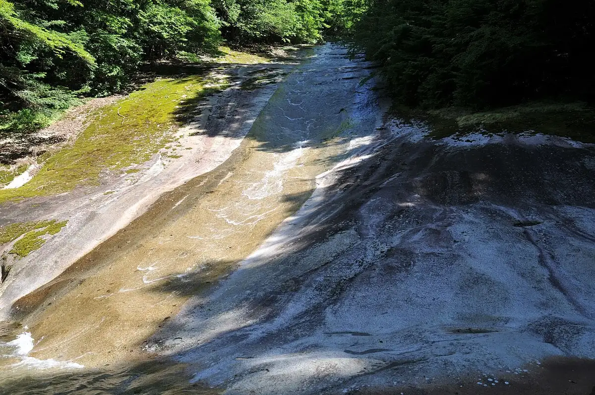
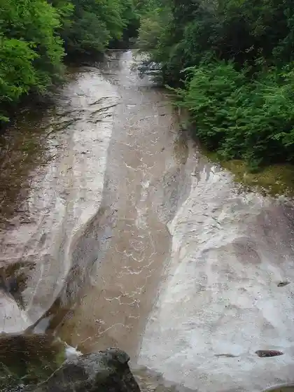
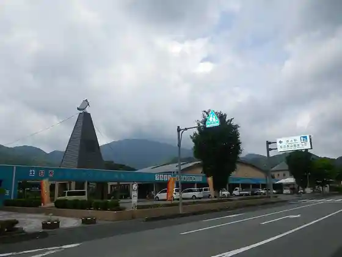
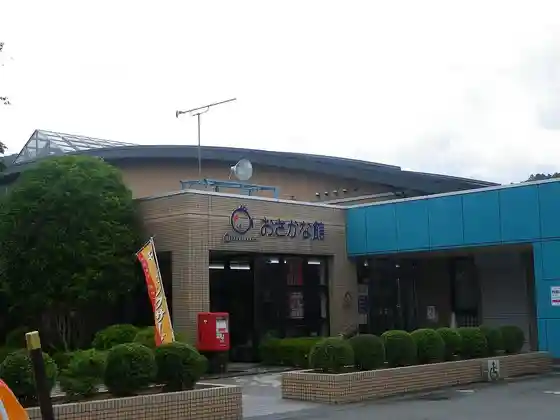
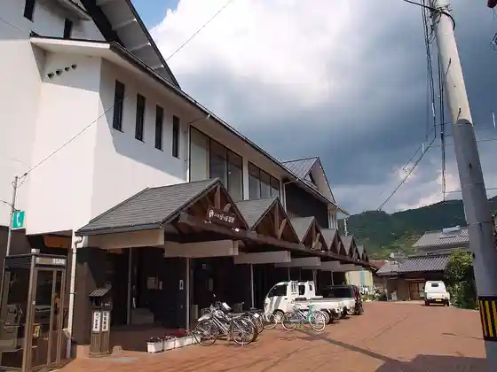

Matsuno
Matsuno · Ehime
Matsuno
Highlighted on the Ehime map.

Stay
Shimantogawa Genryu, Mori no Kuni Mizugiwa no Rojji
Dining
Resutoran Yu Tsuruha
CAFE&PUB TOMMY
Niji no Mori Osakana Kan Kissa Kona
Serubajjio
Mori to Pan
Pan Workshop & Pan
Komugi Ya
Warai Shokushin
Amami Muchu
Roadside Station Niji no Mori Koen Matsu no
Hama Takumi
Kafe Himitsukitchin
Mizugiwa no Rojji
Shiki no Sui
Mori no Kuni no Yado Azami no
Ki Morebi Iori
Onsen
Shimantogawa Genryu, Mori no Kuni Mizugiwa no Rojji Furo
Sights
Yukiwa Falls
Katsu Toko Gorge

Niji no Mori Park

Niji no Mori Osakana Kan

Matsumaru Eki

Misuji Falls